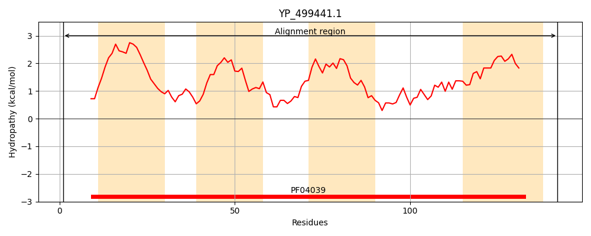
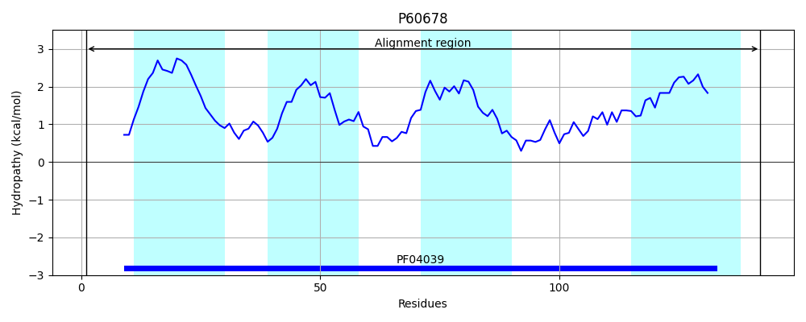
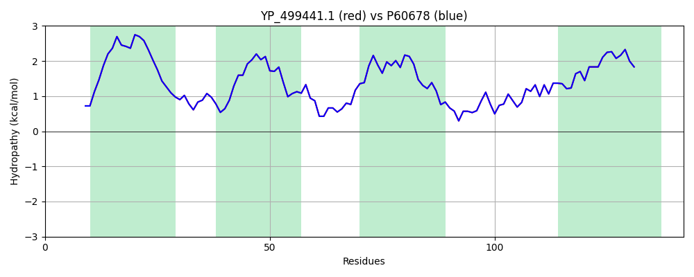

Hit Accession: P60678
Hit TCID: 2.A.63.1.3
Hit Description: gnl|BL_ORD_ID|11123 gnl|TC-DB|P60678|2.A.63.1.3 Na(+)/H(+) antiporter subunit B - Staphylococcus aureus.
Mach Len: 142
e:0.000000
Query TMS Count : 4
Hit TMS Count: 4
TMS-Overlap Score: 4.200000
Predicted Substrates:CHEBI:9175;sodium(1+), CHEBI:5584;hydron
BLAST Alignment:
Score: 727 , Bit scores: 284 bits, E-value: 8.2e-101, Alignment length: 142, Percentage identity: 100
Query: 1 MNRQQNDLILQFAAVIIFFMVMVFGFSLFLAGHYTPGGGFVGGLLFASSLVIITIAFDIETMRKIFPLDFKILIGIGLVFCIATPIASWFLGKNFFTHVTFDIPLFILEPVHMTTAVFFDFGVLCAVVGTVMTIIISIGENE 142
MNRQQNDLILQFAAVIIFFMVMVFGFSLFLAGHYTPGGGFVGGLLFASSLVIITIAFDIETMRKIFPLDFKILIGIGLVFCIATPIASWFLGKNFFTHVTFDIPLFILEPVHMTTAVFFDFGVLCAVVGTVMTIIISIGENE
Sbjct: 1 MNRQQNDLILQFAAVIIFFMVMVFGFSLFLAGHYTPGGGFVGGLLFASSLVIITIAFDIETMRKIFPLDFKILIGIGLVFCIATPIASWFLGKNFFTHVTFDIPLFILEPVHMTTAVFFDFGVLCAVVGTVMTIIISIGENE 142 | Protein Hydropathy Plots: |
|---|
|  |  |
Pairwise Alignment-Hydropathy Plot:
|
|---|
|  |